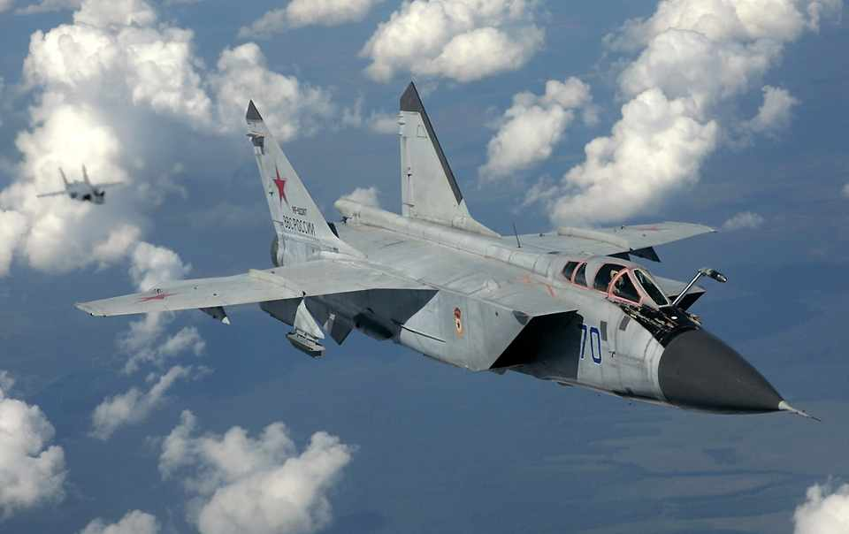

Aeronaves a jato de companhias aéreas, como um Airbus A320 ou um Boeing 777, voam a velocidades que podem passar dos 900 km/h. É um tremendo ritmo, permitindo cruzar países ou até continentes em poucas horas. Mas o homem pode voar a uma velocidade muito mais rápida. No entanto, esses “bilhetes” são reservados apenas aos militares, que podem passar dos 7.000 km/h voando em aviões de caça ou protótipos. Velocidades altas, geralmente Mach 2 (duas vezes a velocidade do som) são essenciais em certos ramos da aviação militar. Interceptadores precisam ser rápidos para abordarem uma aeronave inimiga antes que essa despeje seus armamentos. Já aviões de reconhecimento e espionagem aérea precisam voar rápido para colher seus dadose deixar a área antes de serem detectados e abatidos.
O General Dynamic F-111 “Aardvark” foi um dos bombardeiros a jato mais utilizados da história e conhecido pela precisão de seus ataques em alta velocidade. Estreou em 1964 e atingia 2.655 km/h. Os EUA usaram esse avião em praticamente todos os conflitos em que se envolveu na década de 1970 até 1990. Além dos EUA, também serviu na Austrália, onde foi retirado de serviço em 2010.

O McDonnell Douglas F-15 “Eagle” voou pela primeira vez em 1972 e pode atingir 2.665 km/h. Já foi considerado o melhor caça do mundo até a chegada do Su-27, de fabricação russa. O aparelho é o principal caça das forças aéreas dos EUA, Japão, Israel, Coreia do Sul, Singapura e Arábia Saudita.

Além do Concorde, outro avião supersônico de passageiros foi o Tupolev Tu-144, desenvolvido na antiga União Soviética. A aeronave voou por pouquíssimo tempo, entre 1975 e 1979, e logo foi retirada de serviço por questões de segurança. O aparelho nunca apresentou condições plenas de operação e diversos problemas surgiram enquanto esteve ativo. O modelo podia transportar 167 passageiros e atingir a velocidade máxima de 2.878 km/h.

Evolução do MIG-25, o MIG-31 mantém os créditos da família. Pode atingir até 3.030 km/h e possui um dos sistemas de radar mais potentes já aplicado em um avião de caça, capaz de rastrear outros aviões a mais de 400 km de distância. Estreou em 1975 e hoje serve às forças aéreas de Rússia e Cazaquistão.
O monumental North American XB-70 Valkyrie foi um protótipo de bombardeiro que voou em 1964 e chegou a velocidade máxima de 3.300 km/h. Após problemas no programa, cujo orçamento não parava de subir e um grave acidente, o projeto foi cancelado. Até hoje os EUA tentam desenvolver uma aeronave desse porte e velocidade.

Evolução do X1, primeiro avião que superou a velocidade do som em 1947, o Bell X2 foi um protótipo para testar a reação de fuselagens a velocidades acima de mach 3. Em 1955 o avião experimental atingiu 3.370 km/h. Os ensinamentos colhidos nesse projeto foram aplicados em diversos aviões fabricados nos EUA.